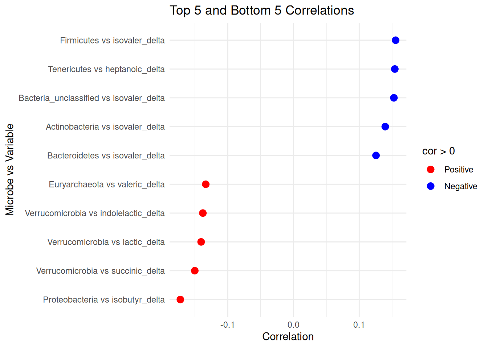
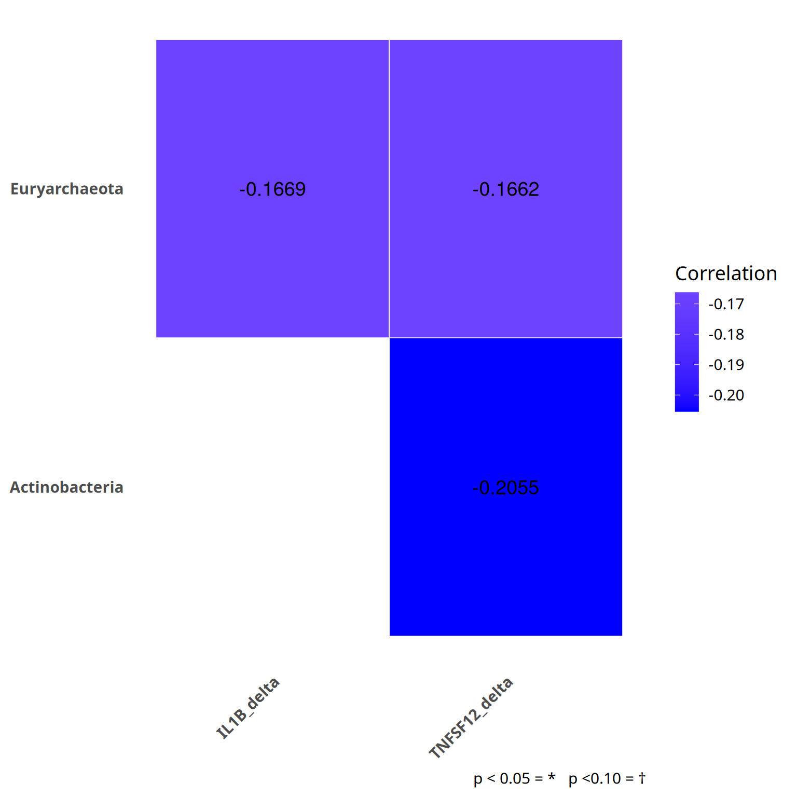
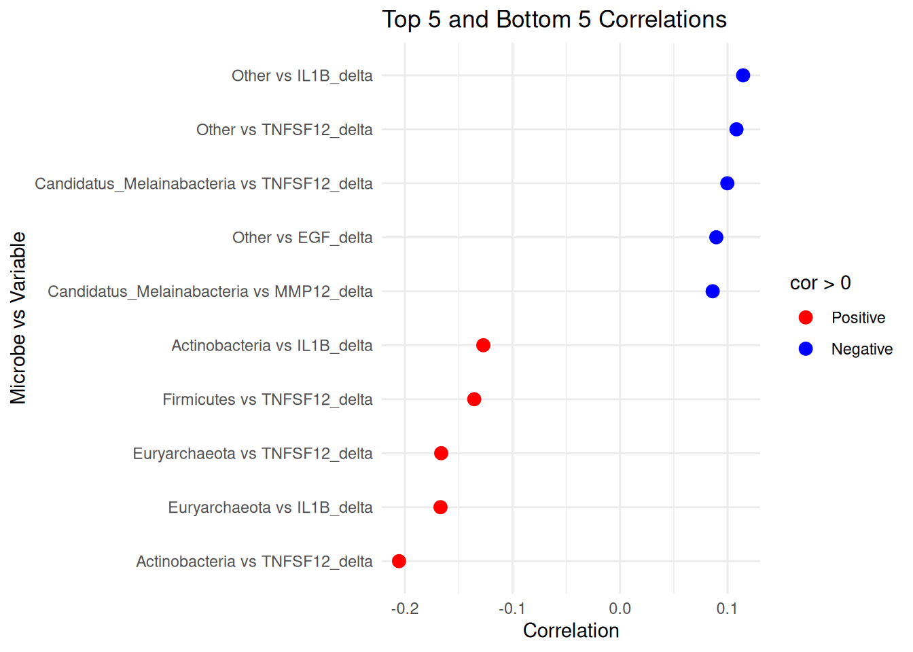
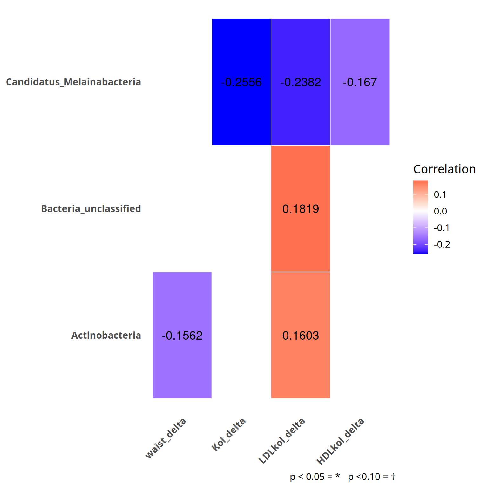
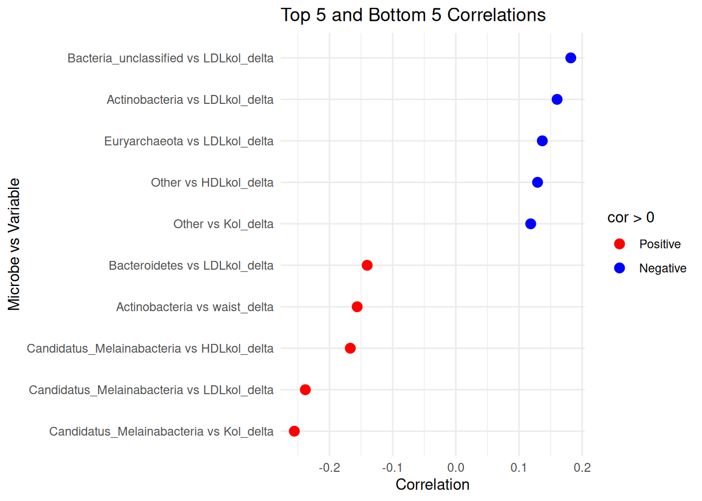

Correlation analysis
1 Taxonomic level: phylum_prevalent
Taxa that are less prevalent than this (in relabundance) have been agglomerated:
- Detection threshold: 0.1%
- Prevalence threshold: 10%
- Number of taxonomic groups: 10
- Transformation: clr
1.1 microbiota vs. Short-chain fatty acids (12 SCFAs in total)
1.1.1 Table
1.1.2 Heatmap
1.1.3 Scatterplot

1.2 microbiota vs. significant inflammation markers (IL-1B, MMP12, TNSF-12, EGF)
1.2.1 Table
1.2.2 Heatmap

1.2.3 Scatterplot

1.3 microbiota vs. dietary intake (total fat, carbohydrates, protein, fiber, SFA, MUFA, PUFA)
1.3.1 Table
1.3.2 Heatmap

1.3.3 Scatterplot

1.4 microbiota vs. biochem/antrop. (waist circumference, total cholesterol, LDL, HDL, Triglycerides)
1.4.1 Table
1.4.2 Heatmap

1.4.3 Scatterplot
